image, 2012 – 2017

image, late 2017 onwards
MAKING THE BLACK HOLE IMAGE
CHANGE IMAGE TO A BETTER ONE


Black holes were brought back into mainstream media when the Event Horizon Telescope Collaboration (EHT) unveiled the "first ever image of a black hole" in April 2019. Established in 2009, EHT is a growing international organisation of over 300 scientists from leading academic institutions. These members are connected by a shared goal to capture the highest resolution images ever seen of black holes, an astronomical body which until recently had only existed in theory. By producing an image of a distant black hole at the scale of its event horizon, EHT can help to provide much sought-after answers for fundamental physics on a supermassive scale. As a team, EHT's members operate from their respective locations around the planet, formed through the organisation of a management team, advisory council, team co-ordinators and active members. Their decadeslong research receives support from both public and private funding, which grows along with their increasing developments1.
Their method of imaging black holes consists of two core stages - first, the astronomical observation and then the computational imaging. The former focuses on connecting various ground-based radio telescopes, located in continents across the planet, into a network which can simulate the capabilities of one massive telescope, synthetically forming an Earth-sized radio dish. With this, they can focus on the centre of a galaxy, right down to the boundary of the black hole at its centre and collect radio-waves that have been emitted from this region and travelled millions of light years to eventually reach the telescopes' antennas. The latter stage requires merging all of the digitised data collected from each individual telescope and processing it to produce a truthful, valid image of the radio waves that were captured.
Yet, the telescope network is patchy in its coverage. EHT founding director Sheperd Doeleman compares it to "taking an optical mirror, smashing it and putting all the shards in different places"2. Those separated shards symbolise the isolated locations of EHT's radio telescopes and how this in turn produces very narrow sight-lines from which they can try to create an image. These sparse data points (there being only ten of them) can result in images that are not only perfectly consistent with the theorised image of a black hole, but also with an infinite number of images of different objects and forms. To address this, the team uses computational tools and algorithms to complete the rest of the image, selecting final images that are deemed the most appropriate and truthful renderings of the recorded data. After many blind experiments, independent workshops and group comparisons using synthetic test data, the team can then apply their verified imaging methods to the real data. In addition to the various final results, EHT also produced a specific image as a final representation which was then shared with the public in 2019.
The following is a condensed summary on some of the processes and challenges that were undertaken by EHT to collect the M87* data and produce the resulting images.
M87* & SGR A*
NASA/UMass/D.Wang et al
In EHT's research, there are two black holes that have received the most attention to date. One is a supermassive black hole (SMBH) that sits at the centre of M87, a bright elliptical galaxy that can be found in view of the Virgo constellation. M87 is an immense system of stars and gas clouds that are gravitationally anchored by a central SMBH which can be referred to as M87*.
Prior to EHT's imaging, M87*'s presence was indicated by several qualities, such as certain structures of radiation emitting across the electromagnetic spectrum and certain measurements of red- and blueshifting generated by the Doppler effect, which also strengthened the argument of a central SMBH. Although positioned over 53 million light-years away, various properties make M87* an ideal candidate for EHT's radio observations: its bright luminosity makes it visible from Earth's relative position in the universe, while its location in the sky (near the celestial equator) makes it accessible to radio telescopes in both the Northern and Southern hemispheres at the same time. This allows EHT to exercise the fullest potential of its observing method by expanding its network further across the Earth's surface, producing the resolving power needed to record and image their chosen subject.
Along with their observations of M87*, EHT also observes a supermassive black hole at the centre of the Milky Way galaxy named Sagittarius A* (Sgr A*). While Sgr A* is much closer to Earth, it is relatively inactive as a radio source and so gives a much weaker signal. Moreover, its position inside "our" galaxy means that any attempt at observing it must deal with a barrier of interstellar medium between Earth and Sgr A*, which creates a scattering effect distorted signals. By comparison, M87* produces radio emissions with abundance which can be successfully detected by EHT's telescope network, with only the vast vacuum of deep space between the source and the imager.
EHT'S GLOBAL ARRAY
Since 2009, EHT has been collecting data of M87*, with each successful observation granting them the chance for access to more telescopes that can be added into their growing global network. For their 2017 observation, the team had acquired simultaneous access to eight telescopes at six geographical sites (listed below).
Using a technique known as Very-Long-Baseline Interferometry (VLBI), EHT organises the telescopes into pairs to observe the black hole simultaneously, switching between pairs as the Earth rotates. The method of temporally pairing radio telescopes that are separated across long distances produces an increased resolving power, allowing the telescopes to generate more refined information on the radio source - the further away the two telescopes are from each other, the further into the distance they can "see" when working together. The addition of lapsed time and the Earth's rotation allows the telescopes to produce additional data on the source.
Many of the telescopes had to be enhanced with specialised technology to carry out this work, such as atomic clocks to time-stamp each telescope's respective data and high-speed data recorders which could handle the demand. The South Pole Telescope was originally built for studying the cosmic microwave background, so EHT had to build an entirely new receiver that could be installed into the telescope to allow it to observe at their desired radio wave frequency.
- Large Millimeter Telescope "Alfonso Serrano" (LMT)
Sierra Negra, Mexico - Atacama Large Millimeter/submillimeter Array (ALMA)
Cerro Chajnantor, Chile - Atacama Pathfinder Experiment (APEX)
Cerro Chajnantor, Chile - IRAM 30-meter Telescope (PV)
Pico Veleta, Spain - James Clerk Maxwell Telescope (JCMT)
Maunakea, Hawai'i, USA - Submillimeter Array (SMA)
Maunakea, Hawaii, USA - Submillimeter Telescope (SMT)
Mount Graham, Arizona, USA - South Pole Telescope (SPT)
South Pole Station, Antarctica

ESO/ L. Calçada
"Realization of this goal requires a specialized instrument that does two things. It must have the ultra-high angular resolution required to resolve the nearest SMBH candidates, and it must operate in a range of the electromagnetic spectrum where light streams unimpeded from the innermost accretion region to telescopes on Earth."
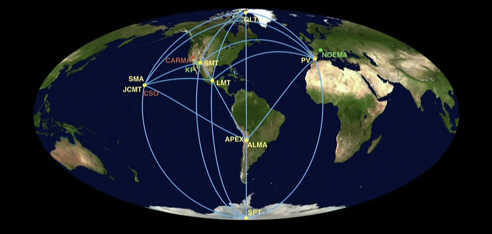
EHT Collaboration
OBSERVING THE EVENT HORIZON
After years of planning and testing, in April 2017 EHT were ready to make their biggest attempt at recording galaxy M87's black hole. Teams were allocated to each telescope in the global network and sent to their designated locations across the planet, driving into high altitudes and arid climates - the standard conditions necessary for most telescope operations.
"EHT science observing campaigns are scheduled for March or April, when Sgr A* and M87 are night-time sources and the weather tends to be best on average over all sites. In addition, ALMA tends to be in a more compact configuration with better prospects for including more antennas in a phased array for increased sensitivity. Test and commissioning runs are scheduled a few months prior to campaigns to ensure that VLBI equipment, which may be dormant for months at a time, is operational. Weather is an important consideration for VLBI observations at millimeter wavelengths. Most of the EHT observatories are located in the northern hemisphere, and those stations have especially large weather variations between seasons. Opacity and turbulence are typically lowest at night and in winter and early spring. At many sites, and particularly the connected-element arrays, the reduced atmospheric turbulence during night-time hours is essentially required. To protect against inclement weather, the EHT uses flexible observing with windows that are about twice as long as the intended number of observing nights. Within the window, a few hours before the start of observing each night, weather conditions are reviewed at all sites and a decision is made whether or not to observe that night. When an EHT night is not triggered, it is often possible for the time to be used for other observing programs at an observatory."
"Unlike with a regular camera, we don't actually capture a picture in the pixel space, but in the frequency space."
Katie Bouman
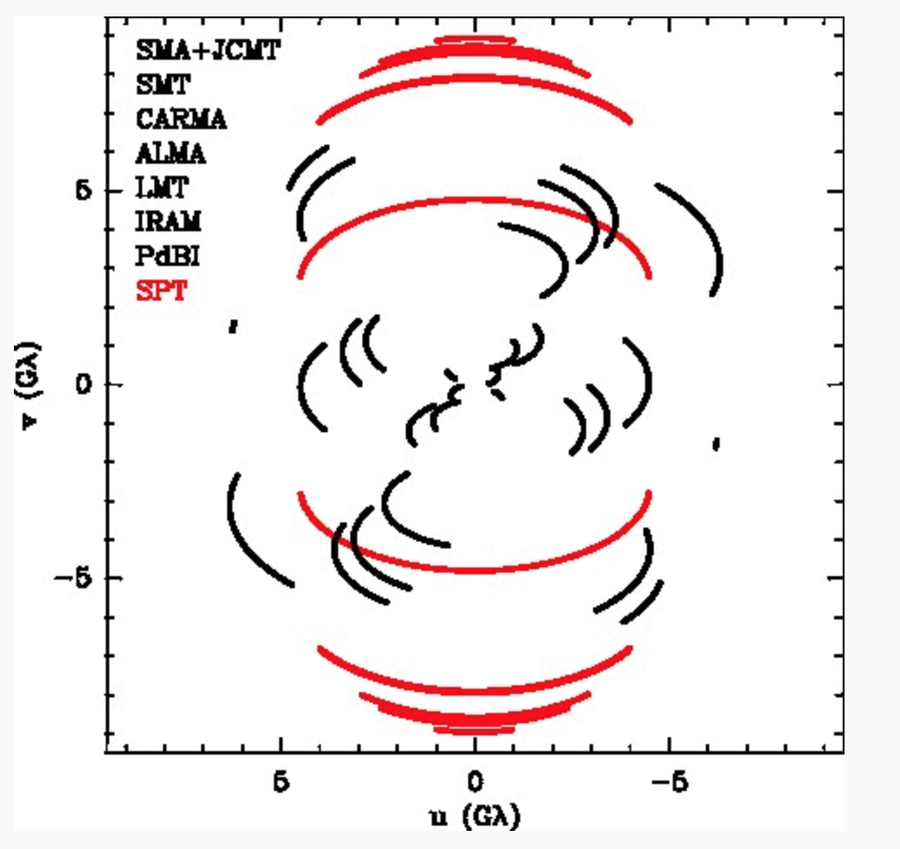
EHT acquired observation time at all eight telescopes for ten consecutive days, allowing time for the constant risk of unpredictable weather conditions which could (and did) cancel out whole days at a time.
Out of the network of eight telescopes, only five were able to directly point towards M87* due to their locations. The other three were utilised to calibrate the direct observation with equally important readings of other bodies like quasar 3C 279, as well as contributing to observations of other candidates like Sgr A*, the SMBH at the centre of the Milky Way.
Out of the network of eight telescopes, only five were able to directly point towards M87* due to their locations. The other three were utilised to calibrate the direct observation with equally important readings of other bodies like quasar 3C 279, as well as contributing to observations of other candidates like Sgr A*, the SMBH at the centre of the Milky Way.
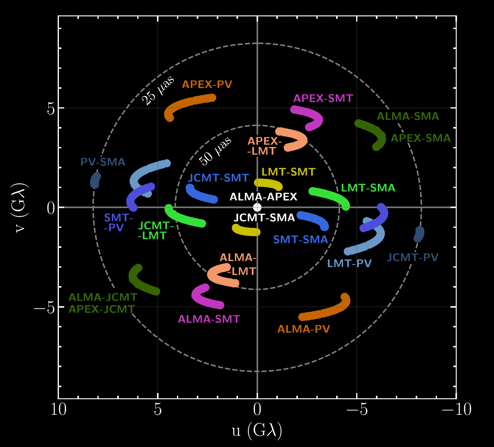
EHT Collaboration
"The EHT ... is a VLBI experiment that directly measures "visibilities," or Fourier components, of the radio brightness distribution on the sky. As the Earth rotates, each telescope pair in the network samples many spatial frequencies. The array has a nominal angular resolution of λ/L, where λ is the observing wavelength and L is the maximum projected baseline length between telescopes in the array (Thompson et al. 2017). In this way, VLBI creates a virtual telescope that spans nearly the full diameter of the Earth."
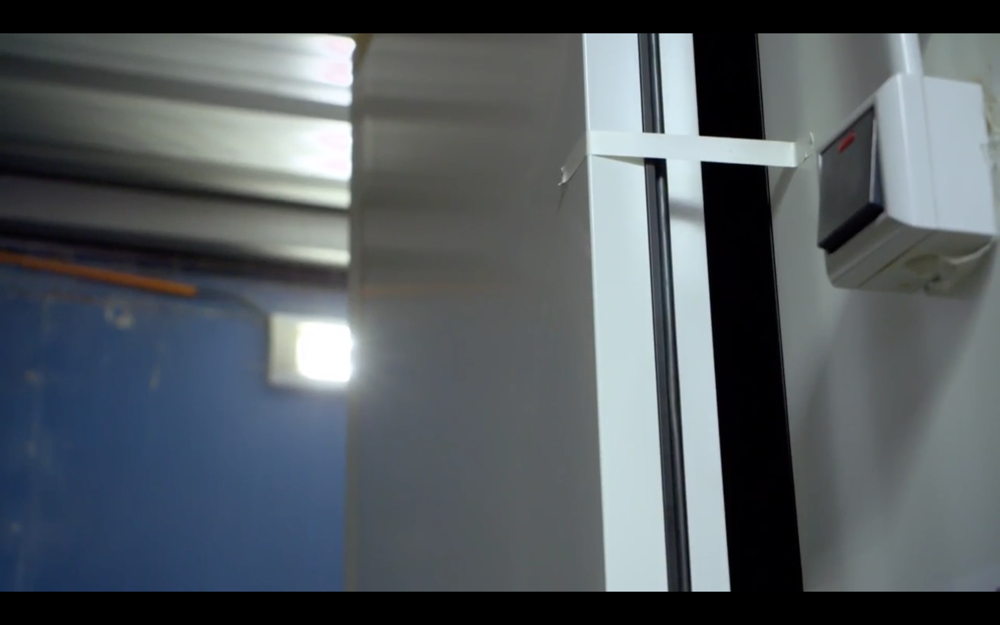
At APEX, while preparing the telescope for the 2017 global observation, the scientists noticed that the atomic clock - responsible for time-stamping the data so that it can be aligned with results from the other telescopes to form the image - began to overheat. Running out of time, with millions of dollars of funding and hundreds of team members counting on the telescope to take part in the array, the team decided to use a piece of tape to keep the door ajar, providing just enough ventilation for the hardware to function.
CALIBRATION
The correlators took the data from every telescope and, by using the time signatures embedded by the atomic clocks, found the exact wavefront that arrived at each telescope from the source, from which they could temporally align all the individual datasets. Averages could now be applied to begin to compress the information into a more workable size, from heavy petabytes down to megabytes which can be emailed between international team members much more easily. To remove imperfections caused by the instruments themselves and the atmosphere above the telescopes, EHT used processes like fringe-fitting to take out any distracting noise and clean up the data to prepare it for image reconstruction. Weak signals were found and then amplified into strong signals to aid the imaging process.
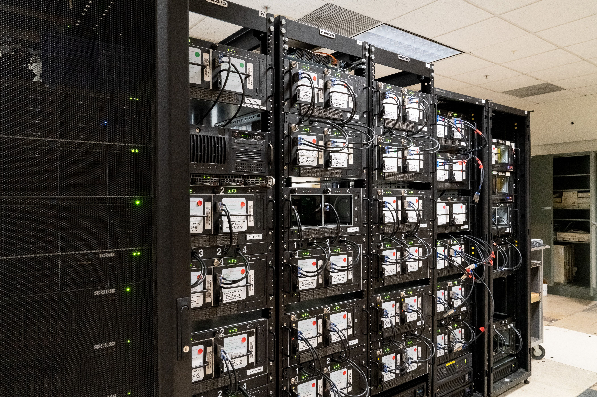
Bryce Vickmark
Each telescope collected around 350TB of data per day, recording at 64 GB per second over a course of 3 - 7 minutes. The analogue radio signals were converted into digital data, then collected and stored within physical hard drives. At almost 5 petabytes of information, the amount of data generated was too large to be shared online so the hard drives were transported by plane. The drives were delivered to two special-purpose supercomputers in Germany and USA, known as correlators, to begin the calibration process.
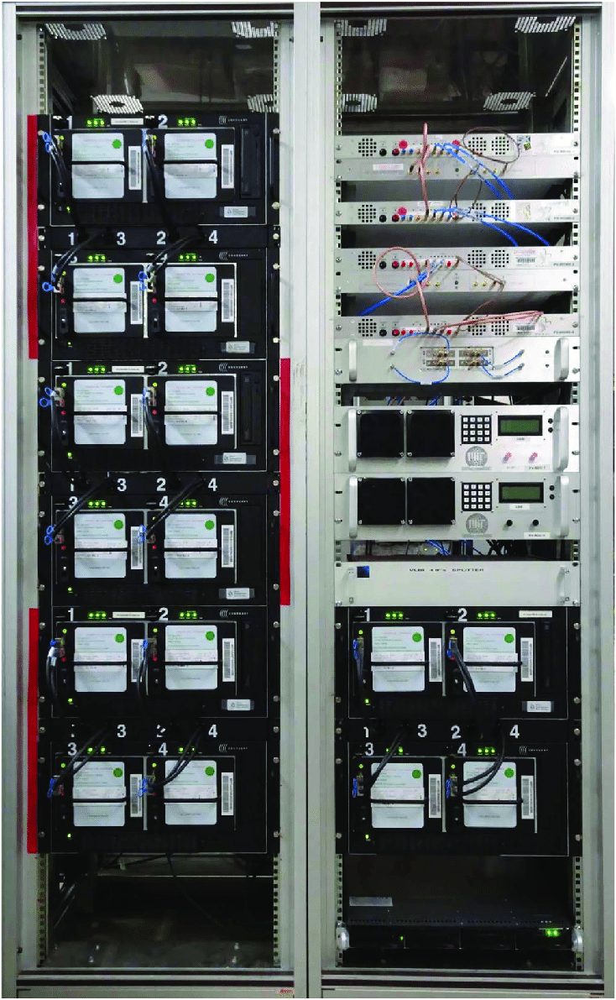
EHT Collaboration
"Okay, so at this point, we have the data, and then we can abstract away basically all of the astrophysics of the problem, and kind of just think of it as a purely computational imaging problem. We have this sparse, noisy data and our challenge is to find the image that actually caused it."
Katie Bouman
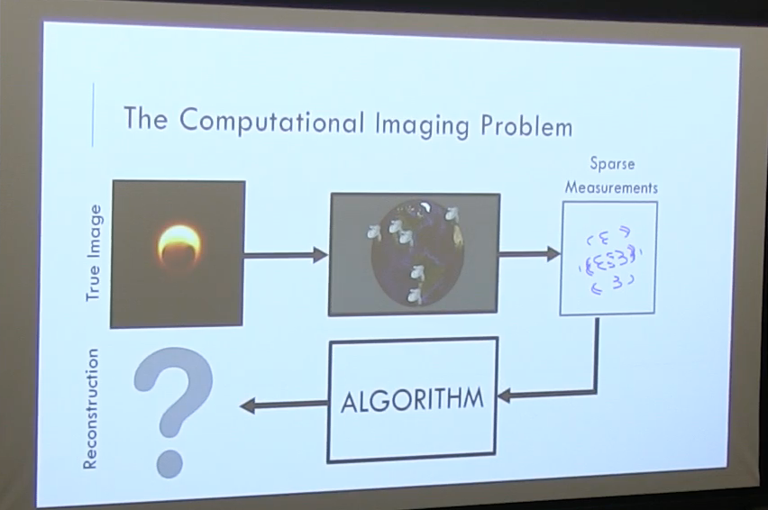
EHT Collaboration
FILLING IN THE GAPS
Even though EHT's array simulates the capabilities of a telescope the size of the Earth, the data it collects only produces information for a very small part of the image since the array of telescopes used in 2017 could only produce 10 data points. The rest of the image must be created through image reconstruction, which consists of a mixture of computational tools such as image processing algorithms and human judgement.
In a TEDtalk two years prior to the release of the black hole image, EHT member Katie Bouman compared the team's network of telescopes to a broken disco ball. Just like how a disco ball should consist of many tiny mirrors completely covering its surface area, an ideal network of telescopes would mean that every single one of those mirrors was in fact a telescope, positioned in every possible location on the planet, providing full coverage of any celestial target within range. In reality, the current set-up of ground-based telescopes on Earth is more similar to a disco ball with most of its mirrors knocked out and just a handful remaining, scattered across its surface.
In a TEDtalk two years prior to the release of the black hole image, EHT member Katie Bouman compared the team's network of telescopes to a broken disco ball. Just like how a disco ball should consist of many tiny mirrors completely covering its surface area, an ideal network of telescopes would mean that every single one of those mirrors was in fact a telescope, positioned in every possible location on the planet, providing full coverage of any celestial target within range. In reality, the current set-up of ground-based telescopes on Earth is more similar to a disco ball with most of its mirrors knocked out and just a handful remaining, scattered across its surface.
RECONSTRUCTION:
1. SYNTHETIC DATA TESTS
Years before EHT had collected data from M87*, they were running tests with synthetic data to check that their imaging methods were sufficient. Since they would not be able to compare their real results against any existing images and there is a strong collective bias to assume or hope that it will end up looking like a bright disk or ring (based on scientific theory and equally visual culture), EHT focussed their efforts on not just verifying their imaging methods but also minimising human intervention as much as possible.
The team underwent various imaging challenges, in which their imaging algorithms and pipelines would take the synthetic data (without any information on the "true" image which it was converted from) and reconstruct it into an image that the computational methods believed was correct. Participants were split into teams and asked to select their preferred method to process the data, equally unaware of what the original source image was. Each team produced a slightly different image result, however there would be major common features and clear anomalies which allowed them to discern what they believed and did not believe in the images that they produced. Moreover, the most successful methods produced images with a strong likeness to the original true image, indicating that they would do the same with the real M87* data.
The teams were also given data from unknown source images which were completely unexpected, such as the image of a snowman. This allowed the testers to check if the teams were inputting any bias on their imaging methods by choosing parameters which would encourage the data to produce a black hole-like shape. Luckily, each team produced a reconstructed image which stayed very close to the original snowman image, indicating that there was not an override of bias in the imaging process.
The team underwent various imaging challenges, in which their imaging algorithms and pipelines would take the synthetic data (without any information on the "true" image which it was converted from) and reconstruct it into an image that the computational methods believed was correct. Participants were split into teams and asked to select their preferred method to process the data, equally unaware of what the original source image was. Each team produced a slightly different image result, however there would be major common features and clear anomalies which allowed them to discern what they believed and did not believe in the images that they produced. Moreover, the most successful methods produced images with a strong likeness to the original true image, indicating that they would do the same with the real M87* data.
The teams were also given data from unknown source images which were completely unexpected, such as the image of a snowman. This allowed the testers to check if the teams were inputting any bias on their imaging methods by choosing parameters which would encourage the data to produce a black hole-like shape. Luckily, each team produced a reconstructed image which stayed very close to the original snowman image, indicating that there was not an override of bias in the imaging process.
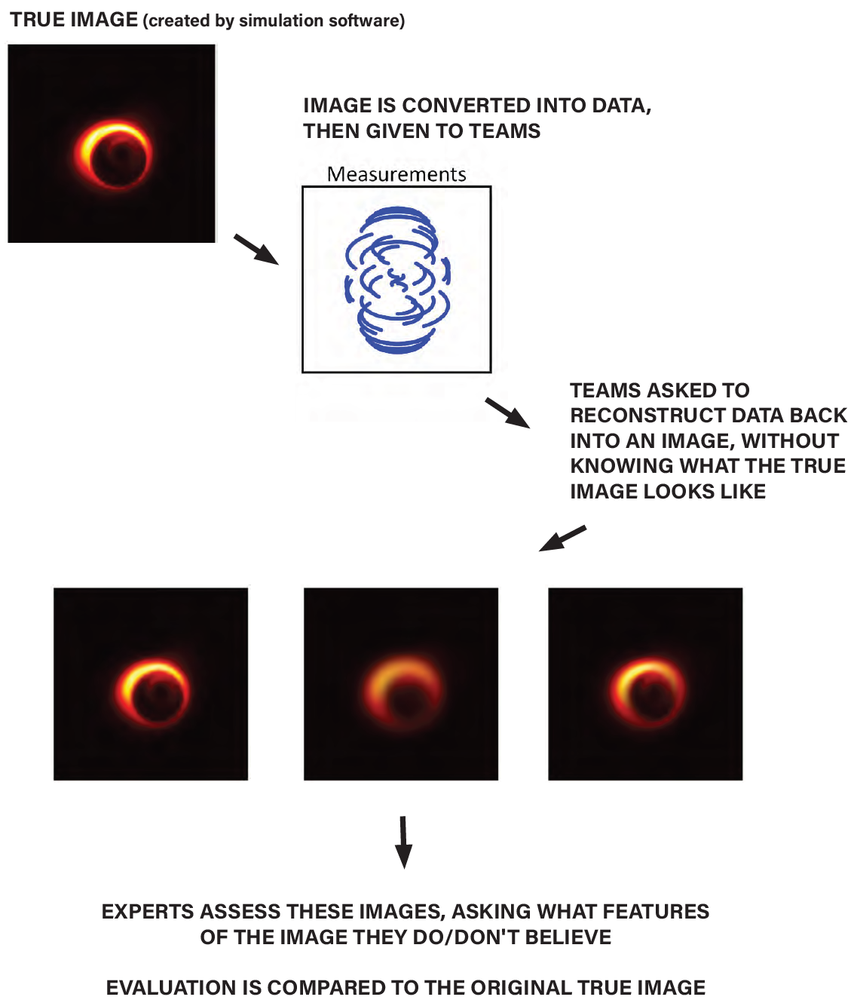
RECONSTRUCTION:
2. BLIND IMAGING OF REAL M87* DATA

EHT Collaboration
Having evaluated their methods, EHT were ready to handle the real M87* data once collected in 2017 and calibrated for imaging. They organised four international teams which were given the real data to work on for a seven week period. They were asked to select one algorithm to blindly reconstruct the image and then to select what they thought was the best outcome, working independently from other teams to avoid any external influences.
After seven weeks, they reconvened and compared results: every final image shared the same emissive ring of light surrounding a dark central shadow, measuring at 40 microarcseconds across, with a brighter intensity in the lower section of the ring.
After seven weeks, they reconvened and compared results: every final image shared the same emissive ring of light surrounding a dark central shadow, measuring at 40 microarcseconds across, with a brighter intensity in the lower section of the ring.
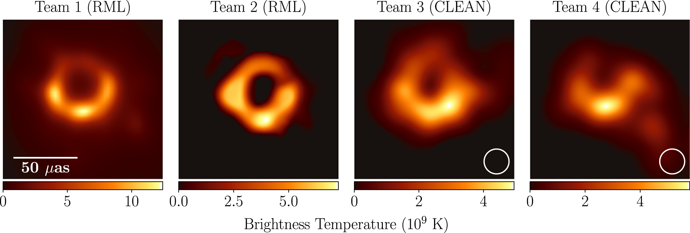
"The first EHT images of M87, blindly reconstructed by four independent imaging teams using an early, engineering release of data from the April 11 observations ... Images from Teams 1 and 2 used RML methods (no restoring beam); images from Teams 3 and 4 used CLEAN (restored with a circular 20 μas beam, shown in the lower right). The images all show similar morphology, although the reconstructions show significant differences in brightness temperature because of different assumptions regarding the total compact flux density (see Table 2) and because restoring beams are applied only to CLEAN images."
RECONSTRUCTION:
3. OBJECTIVELY CHOOSING IMAGING PARAMETERS
Even with this unanimous outcome, the teams needed to further test their imaging methods. With their goal image being the first of its kind, there was no other direct image with which they could compare their findings and they were at risk of having produced images that were based more on theoretical ideals and personal preferences. To counter this, they verified their processes by trying to impose various assumptions onto the algorithms as to what kind of image could be produced from the real M87* dataset, to see if it could be influenced by such assumptions.
To process the data into an image, the team pushes the data through imaging pipelines which contain "knobs" that are constantly being tuned by the user to have more control over the resulting image - a step which EHT tried to remove. To do so, they trained their imaging pipelines on some synthetic data of clear geometric structures (see image), tuning the knobs of the pipelines to successfully create such images from the data given. Once this was achieved, they took those exact parameters and applied them to the real M87* data, which still resulted in an image of the bright asymmetrical ring with a hole in the centre. This showed that even if they tried to coax the pipeline to produce a different type of image, the M87* data will remain independent to external assumptions and still lead to the same recurring features. Equally, if those geometric structures were really present in the M87* data, then this would have been reflected in the resulting images, yet this was not the case.
To process the data into an image, the team pushes the data through imaging pipelines which contain "knobs" that are constantly being tuned by the user to have more control over the resulting image - a step which EHT tried to remove. To do so, they trained their imaging pipelines on some synthetic data of clear geometric structures (see image), tuning the knobs of the pipelines to successfully create such images from the data given. Once this was achieved, they took those exact parameters and applied them to the real M87* data, which still resulted in an image of the bright asymmetrical ring with a hole in the centre. This showed that even if they tried to coax the pipeline to produce a different type of image, the M87* data will remain independent to external assumptions and still lead to the same recurring features. Equally, if those geometric structures were really present in the M87* data, then this would have been reflected in the resulting images, yet this was not the case.
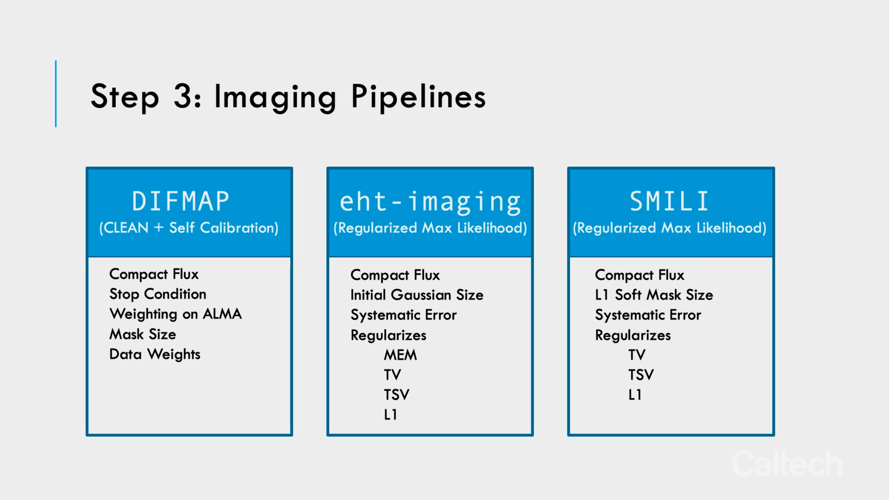
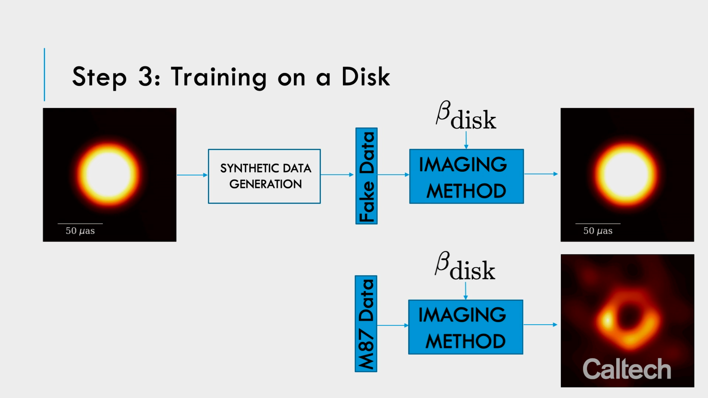
EHT Collaboration
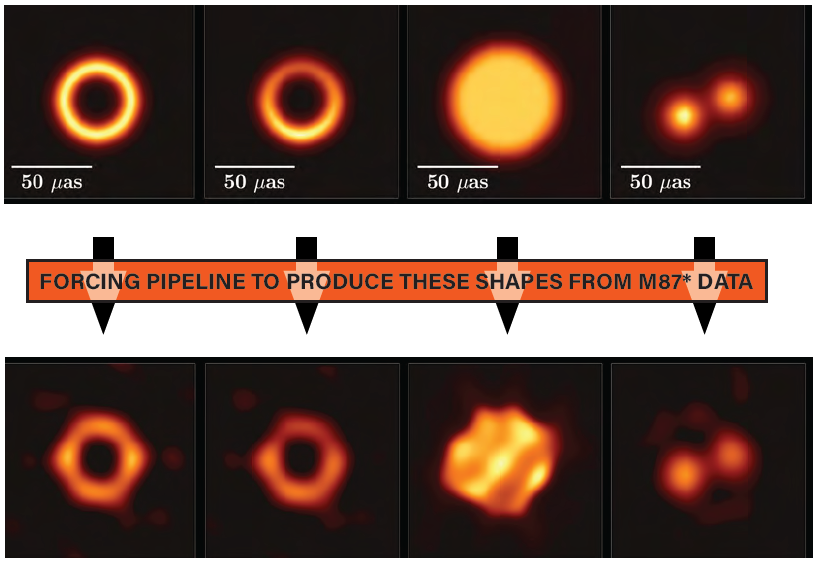
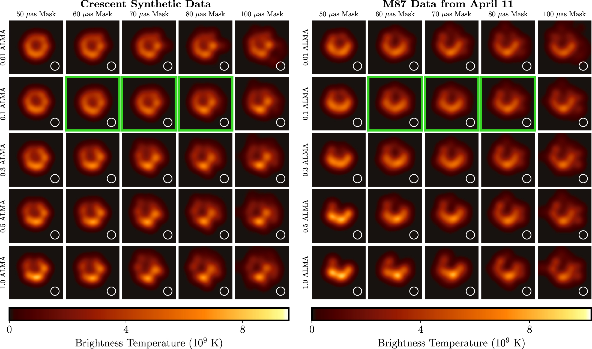
EHT Collaboration
The team ran 100,000s of imaging parameters on the M87* data, and chose 1,500 images which were considered top-ranking amongst each slice (see image). These final approved images represent possible image outputs of the data which are all deemed valid or truthful in their own way. The difference between these collective final images reflects differences in the parameters selected during the imaging process.
A FINAL IMAGE
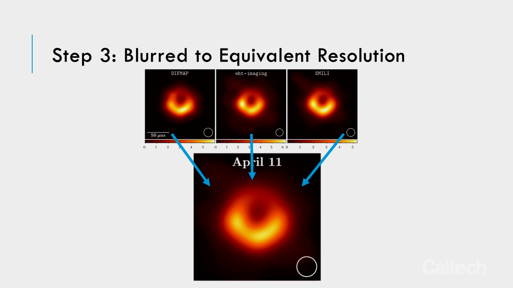
EHT Collaboration
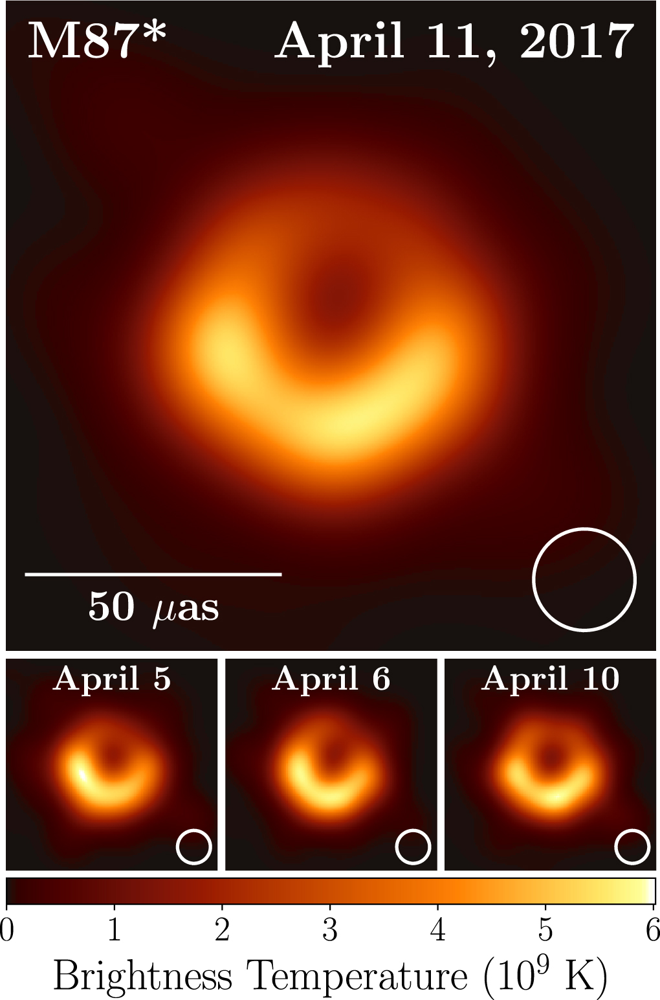
EHT Collaboration
The team merged three of the final images from each pipeline to produce a conclusive average which could be both an endpoint to this particular exercise and a representation of the entire research project to date. This final image shows a complete yet asymmetrical circle of bright energy which represents the photon ring - the area just outside the event horizon where matter can orbit the collapsed star without falling in. The increased luminosity in the bottom half indicates to scientists that the black hole is rotating clockwise towards Earth.
This final image is a compression of the initial ≈5 petabytes of data, down to just a few hundred kilobytes. The European Space Observatory's online image archive offers the black hole image in various sizes, swelling all the way up to 183MB for a "Fullsize Original". It even transforms from its square format into a vast landscape of negative space, ready for its highly anticipated 2019 release into the public world.
This final image is a compression of the initial ≈5 petabytes of data, down to just a few hundred kilobytes. The European Space Observatory's online image archive offers the black hole image in various sizes, swelling all the way up to 183MB for a "Fullsize Original". It even transforms from its square format into a vast landscape of negative space, ready for its highly anticipated 2019 release into the public world.

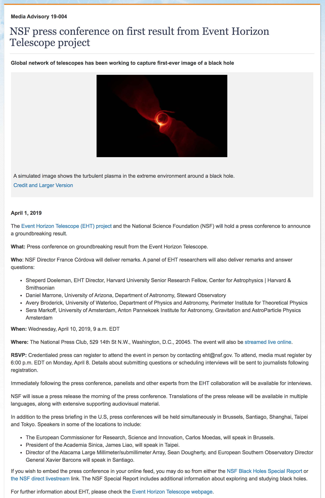
EMILY CONOVER:
(reporter for Science News)
(reporter for Science News)
Sitting in the audience watching the announcement of the first image of a black hole was a thrilling experience. There was a collective sense of tense anticipation from the scientists, journalists, and government officials gathered to watch it. The scientists were about to unveil never-before-seen details of what are perhaps the most mysterious and fascinating objects in the universe, black holes. In the moments before that orange doughnut flashed on the screen for the first time, I held my breath. As soon as I saw it, I knew instantly that it would be an iconic image, one that would be plastered across websites and newspapers across the world. This was great, because my publication, Science News, had been preparing our readers for this for weeks, with a video and news stories anticipating the image's release.
Personally, I had been worried that the image would be disappointing — too blurry to make out the black hole's shadow very well, for example. But it was stunning, and clearly evoked an appropriately deep sense of wonder. On the Science News website, the article on the discovery was wildly popular. I think that's partly because humans tend to crave visual imagery. That picture immediately made these ethereal cosmic objects somehow more tangible. And our readers couldn't get enough of it.
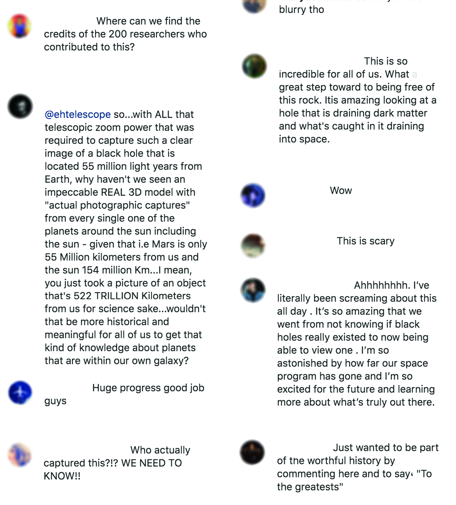